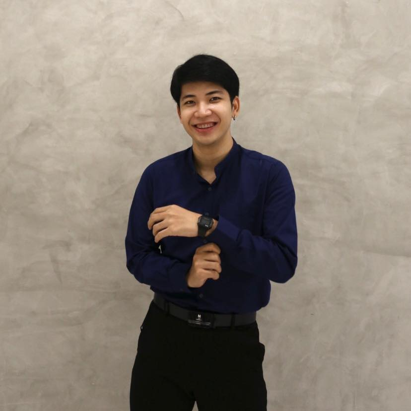

{{tr('Anuwat')}}.
{{tr('Open to New Opportunities')}}
{{tr("Hi, I'm")}}
{{tr('Anuwat')}}
{{tr(typed)}}
{{tr("QA Engineer with 4+ years of hands-on experience in manual and automation testing. Passionate about quality, clean code, and building reliable software.")}}

{{tr("Available for work")}}
{{tr("Scroll")}}
{{tr("Career History")}}
{{tr("Work")}} {{tr("Experience")}}
{{tr(j.period)}}
{{tr(j.tag)}}
{{tr(j.role)}}
{{tr(j.company)}}
{{tr(domain)}}
{{tr(j.overview)}}
{{tr(topic.title)}}
- {{tr(item)}}
{{tr(j.tabs[j.activeTab].footer)}}
{{tr("Academic & Part-time")}}
{{tr(j.period)}}
{{tr(j.role)}}
{{tr(j.company)}}
- {{tr(it)}}
{{tr("Technical Proficiency")}}
{{tr("Skills")}} & {{tr("Tools")}}
{{tr(cat.name)}}
{{cat.tags.length}} {{tr("skills")}}
{{tr("Background")}}
{{tr("Education")}} & {{tr("Language")}}
{{tr("Bachelor of Science in Computer Science & Innovation")}}
{{tr("Mae Fah Luang University")}}
{{tr("GPAX 3.39")}}
{{tr("Languages")}}
{{tr(l.name)}}
{{tr(l.level)}}
{{tr("Achievements")}}
{{tr("Certificates")}}
{{String((i % certs.length)+1).padStart(2,'0')}}
{{lbIdx+1}} / {{certs.length}}
{{tr("Get in Touch")}}
{{tr("Contact")}} {{tr("Me")}}
{{tr("Email")}}
{{tr("LinkedIn")}}
{{tr("GitHub")}}
{{tr("Location")}}
{{tr("Nawamin 88, Bueng Kum, Bangkok, Thailand")}}
👋
{{tr("Let's work together")}}
{{tr("Open to new opportunities in QA Engineering and Automation Testing. Feel free to reach out!")}}
{{tr("Send Email")}}